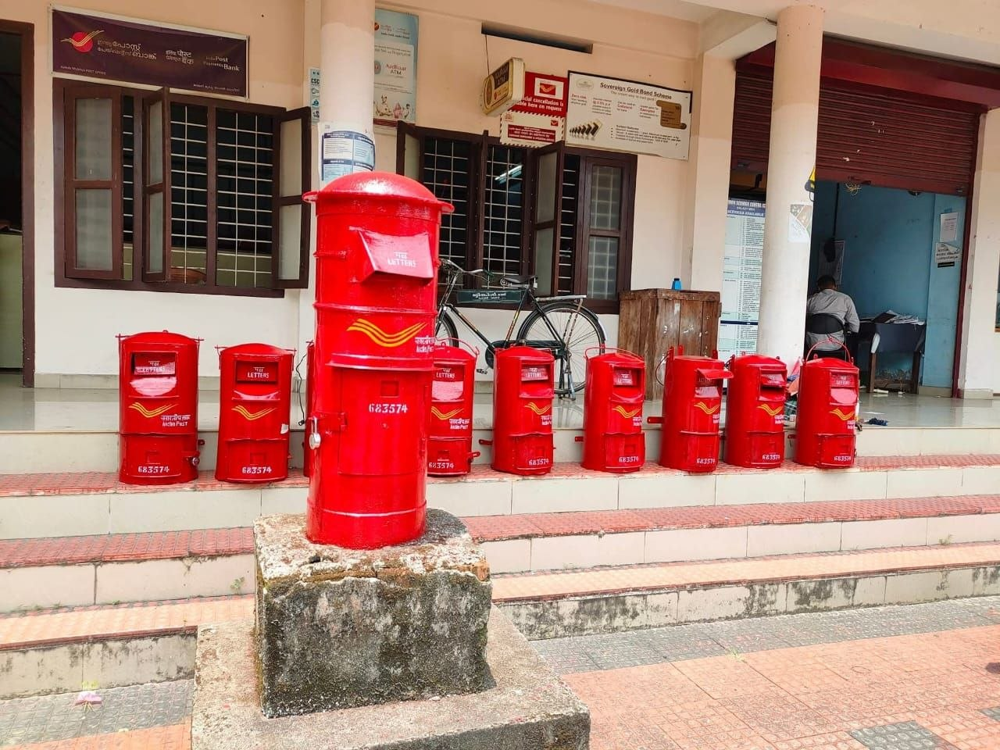

സർവകലാശാല ക്യാമ്പസിലെ പോസ്റ്റ് ഓഫീസിന്റെ മുൻപിൽ കണ്ട കാഴ്ച. ചുവപ്പ് ഉടുത്ത് ഒരുങ്ങി നിൽക്കുന്ന ഇവരെ കണ്ടപ്പോൾ... ഒരുകാലത്ത് നമ്മുടെയൊക്കെ ജീവിതത്തിൽ അനിവാര്യമായിരുന്ന ഒന്ന്... പ്രതീക്ഷകളുടെ... സന്തോഷങ്ങളുടെ... പ്രതീകമായിരുന്നല്ലോ ഇത് എന്ന് ഓർത്തുപോയി...
Type: കവിത
Written by: സിന്ധു ഉല്ലാസ്
ബസ് സ്റ്റാൻഡിലെ
ആൽമരച്ചോട്ടിലായിരുന്നു
ആശനിരാശകളുടെ ലോകത്തേക്ക്
തുറന്നു വച്ച കിളിവാതിലുമായി
നീ നിന്നിരുന്നത്.
ഞങ്ങളുടെ കിനാവുകളും
വിരഹനിശ്വാസത്താൽ
പ്രണയാക്ഷരങ്ങളുടെ മഴപ്പെയ്ത്ത്
നോവിന്റെ മൂശയിൽ മെനഞ്ഞെടുത്ത
കാത്തിരിപ്പിനൊടുവിൽ എത്തുന്ന
ഹൃദയത്തുടിപ്പും ചുടുചുംബനങ്ങളും